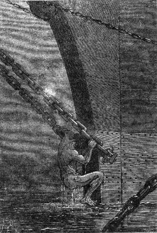
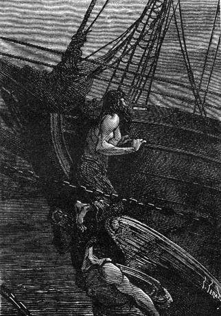
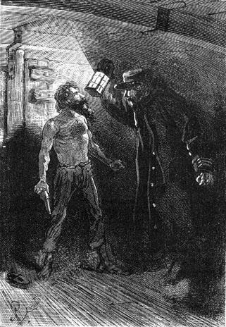
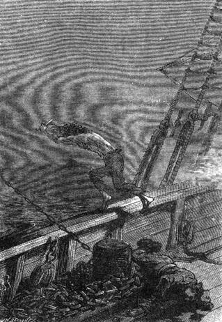

There was no longer any doubt about the pirates’ intentions. They had thrown anchor a short distance from the island and it was evident that the next day, by means of their boats, they would come ashore.
Cyrus Smith and his companions were ready to act but, determined as they were, they must not forget to be prudent. Perhaps their presence could still be concealed in the event that the pirates would be content to land on shore without venturing into the island’s interior. Their only purpose might be to draw fresh water from the Mercy and it was not impossible that the bridge, thrown a mile and a half from the mouth, and the arrangements at the Chimneys, would escape their notice.
But why this flag flying from the truck of the brig’s mast? Why the firing of the cannon? Pure boasting doubtless, unless it indicated taking possession. Cyrus Smith now knew that the vessel was well armed. What did the colonists of Lincoln Island have to reply to the pirates’ cannon? Merely a few guns.
“Nevertheless,” Cyrus Smith noted, “we are in an impregnable position here. The enemy cannot discover the opening of the passageway now that it is hidden under reeds and grass, and consequently it will be impossible for him to penetrate into Granite House.”
“But our plantations, our poultry yard, our corral, everything,” shouted Pencroff, stamping his foot. “They can ravage everything, destroy everything in a few hours.”
“Everything, Pencroff,” replied Cyrus Smith, “and we have no way to prevent it.”
“Are they numerous? That is the question,” the reporter then said. “If there are only a dozen or so we will know how to stop them, but forty, fifty, more perhaps...”
“Mister Smith,” Ayrton then said, advancing toward the engineer, “will you grant me leave?”
“For what, my friend?”
“To go to the vessel to determine the size of her crew.”
“But Ayrton...” replied the engineer, hesitating, “you will risk your life...”
“Why not, sir?”
“That is more than your duty.”
“I have more than my duty to do,” replied Ayrton.
“You will go to the vessel with the canoe?” asked Gideon Spilett.
“No, but I will swim. A man can glide between the waves while a canoe cannot.”
“Do you realize that the brig is a mile and a quarter from shore?” said Herbert.
“I swim well, Mister Herbert.”
“I tell you that you will risk your life,” the engineer repeated.
“My life is of no value,” replied Ayrton. “Mister Smith, I ask this of you as a favor. It is perhaps a way for me to gain respect for myself.”
“Go, Ayrton,” replied the engineer, who sensed that a refusal would deeply hurt the former convict, who was now an honest man.
“I will accompany you,” said Pencroff.
“You mistrust me?” Ayrton replied vividly.
Then more humbly:
“Alas!”
“No, no,” Cyrus Smith said, “no, Ayrton! Pencroff does not mistrust you. You misinterpret his words.”
“As a matter of fact,” replied the sailor, “I propose to accompany Ayrton only to the islet. It is possible, though not probable, that one of these rascals has set foot there and in that case two men will not be too many for preventing him from giving the alarm. I will wait for Ayrton on the islet and he alone will go to the vessel since this is his wish.”
This agreed, Ayrton made preparations for his departure. His plan was audacious but it could succeed thanks to the obscurity of the night. Once he reached the ship, Ayrton could catch on either to the bob-stays or to the shroud chains. He could determine their number and perhaps overhear the intentions of the convicts.
Ayrton and Pencroff, followed by their companions, descended to the beach. Ayrton undressed and rubbed himself with grease so as to lessen the effect of the water’s temperature which was still cold. In fact, he might be obliged to remain in it for several hours.
During this time, Pencroff and Neb went to find the canoe, moored a few hundred feet higher up on the banks of the Mercy, and when they returned, Ayrton was ready to leave.
A cloak was thrown over Ayrton’s shoulders and the colonists came to clasp his hand.
Ayrton got into the canoe with Pencroff.
It was ten thirty in the evening when the two disappeared into the darkness. Their companions went to the Chimneys to wait for them.
The channel was easily crossed and the canoe reached the opposite shore of the islet. This was done cautiously in case some pirates were prowling about. But it appeared that the islet was deserted. Ayrton, followed by Pencroff, quickly crossed it, scaring off some birds nested in the cavities in the rocks; then without hesitation, he threw himself into the water and swam noiselessly in the direction of the vessel, whose recently lit lights indicated its exact position.
As for Pencroff, he crouched behind a twist in the shoreline and waited for his companion’s return.
Ayrton swam with a vigorous stroke and glided across the sheet of water without producing the slightest quiver. His head barely emerged and his eyes were fixed on the dark mass of the brig whose lights were reflected in the water. He thought only of the task that he had promised to accomplish. He did not even consider the dangers that he ran not only on board the vessel but also in the waters which were often frequented by sharks. The current carried him and he rapidly moved away from the shore.

He took a breath and climbed the chains...
A half-hour later Ayrton, without having been seen or heard, drew alongside the vessel and caught on to the bob-stays of the bowsprit. He took a breath, climbed the chains and reached the top of the cutwater. There several sailors’ trousers were drying. He put on a pair. Then, settling down, he listened.

Settling down, Ayrton listened.
No one was asleep on board the brig. On the contrary, they were talking, singing and laughing. And this is the talk, accompanied by oaths, overheard by Ayrton:
“Our brig is a fine prize!”
“The Speedy sails well. It merits its name.”
“It can outdistance the entire navy of Norfolk.”
“Hurrah for its commander.”
“Hurrah for Bob Harvey.”
We can understand how Ayrton felt on hearing this fragment of conversation, when we realize that Bob Harvey was one of his former companions in Australia, an audacious sailor who had continued with his criminal activities. In the waters around Norfolk Island, Bob Harvey had seized this brig which was loaded with arms, munitions, utensils and tools of all sorts, destined for one of the Sandwich Islands. His entire gang went on board and, becoming pirates after having been convicts, they scoured the Pacific, destroying vessels and massacring their crews with more ferocity than the Malays themselves.
The convicts shouted and boasted about their deeds while drinking to excess and this is what Ayrton discovered:
The actual crew of the Speedy was composed solely of English prisoners who had escaped from Norfolk.
Now this is what Norfolk is:
At 29° 2′ south latitude and 167° 57′ east longitude, to the east of Australia, there is a small island six leagues in circumference which is dominated by Mount Pitt, rising to a height of eleven hundred feet above sea level. This is Norfolk Island, turned into an establishment for the jailing of the most intractable convicts of the English penitentiaries. There are five hundred of them, subject to an iron discipline and terrible punishments, and guarded by one hundred fifty soldiers and one hundred fifty employees under the orders of a governor. It would be difficult to imagine a worse group of criminals. Sometimes—though this is rare—in spite of the excessive surveillance to which they are subject, some escape, seize vessels by surprise, and then scour the Polynesian Archipelagoes.
Such were Bob Harvey and his companions. Such had Ayrton once wished to be. Bob Harvey had seized the Speedy, anchored in sight of Norfolk Island; the crew had been massacred and for a year now this vessel, now a pirate ship, had scoured the Pacific seas under the command of Harvey, formerly a master mariner, now a pirate of the seas and well known to Ayrton.
The convicts were for the most part gathered on the poop deck to the rear of the vessel but a few were stretched out on the bridge, shouting.
The conversation continued amidst shouting and drinking. Ayrton learned that chance alone had brought the Speedy within sight of Lincoln Island. Bob Harvey had never set foot on it but, as Cyrus Smith had feared, finding himself near an unknown land, unmarked on any map, he thought of visiting it, and if suitable, he would make it the brig’s home port.
As to the black flag unfurled from the truck of the Speedy’s mast and the firing of the cannon, that was pure bragging on the part of the pirates, following the example of warships when they lower their colors. It was not a signal and no communication existed between Lincoln Island and the escapees of Norfolk.
The domain of the colonists was menaced by an immense danger. Evidently the island, with its easy access to fresh water, its small port, its resources of all sorts so increased in value by the colonists, and the hidden retreats of Granite House, would be suitable for the convicts; in their hands it would become an excellent place of refuge and because it was unknown, it would assure them, for a long time perhaps, impunity with security. It was also evident that the colonists’ lives would not be respected and that the first concern of Bob Harvey and his companions would be to massacre them without mercy. Cyrus Smith and his men did not even have the option of fleeing and hiding themselves on the island since the convicts intended to live there and in the event that the Speedy would leave on an expedition, it was probable that some of the crew would remain on land in order to look after things. Thus they must fight them and destroy them to the last man. They deserved no pity and any methods used against them would be justified.
Those were Ayrton’s thoughts and he well knew that Cyrus Smith shared his viewpoint.
But was resistance and victory in the end possible? That depended on the brig’s armament and the number of men that she carried.
It was this that Ayrton resolved to determine at any cost, and since an hour after his arrival things began to quiet down and a good number of the convicts were already in a drunken stupor, Ayrton did not hesitate to venture onto the deck of the Speedy which the extinct lanterns then left in deep darkness.
He hoisted himself on the cutwater and by the bowsprit he reached the brig’s forecastle. He glided among the convicts stretched out here and there. He made a tour of the ship and discovered that the Speedy was armed with four cannons which could fire balls of eight to ten pounds. By touching them he even verified that these cannons were breech loaders. Thus they were modern weapons, easy to use and terrible in effect.
As to the men lying about the deck, they numbered about ten but it was to be supposed that others, more numerous, were sleeping inside the brig. Besides, on listening to them, Ayrton was led to believe that there were about fifty on board. That was a lot for the six colonists of Lincoln Island. But thanks to Ayrton’s devotion, Cyrus Smith would not be surprised. He would know the strength of his adversaries and make arrangements in consequence.
It now remained for Ayrton to return to render an account to his companions of the mission with which he was charged and he prepared to go to the forward part of the brig in order to glide down to the sea.
But, as he had said, he wanted to do more than his duty, and an heroic idea then came to him. It was to sacrifice his life, but he would save the island and the colonists. Cyrus Smith evidently could not resist fifty bandits armed with all kinds of weapons who, whether they penetrated Granite House by force or starved out the besieged, would overcome them. And then he thought of his saviors, those who had remade him into a man and an honest man at that, those to whom he owed everything, they being killed without pity, their work utterly destroyed, their island changed into a pirate’s retreat! He told himself that he, Ayrton, was the original cause of these disasters since otherwise his old companion, Bob Harvey, would not have realized his very own plans. A sentiment of horror then took hold of his entire being and he was seized by an irresistible desire to blow up the brig, himself and all those that it carried. Ayrton would perish in the explosion but he would have done his duty.
Ayrton did not hesitate. It was easy to reach the powder room which is always situated to the rear of a ship. There would be no lack of powder on a vessel made for this business, and a spark would suffice to annihilate it in an instant.
Ayrton carefully slid down between decks where numerous sleepers were strewn about, weighed down more from drunkenness than slumber.
There was a lighted lantern at the foot of the grand mast around which was suspended a rack furnished with firearms of all sorts.
Ayrton took a revolver from the rack and assured himself that it was loaded and primed. He needed nothing more to accomplish his work of destruction. He then glided to the rear so as to arrive under the poop deck where the storeroom ought to be.
However, on this between decks level, which was rather dark, it was difficult to move about without jostling some convict not fully asleep. Between oaths and jabs, Ayrton was more than once forced to suspend his advance. But finally he reached the partition that enclosed the rear compartment and he found the door that would open into the very storeroom.
Ayrton was reduced to forcing it and set about the task. It was difficult to accomplish this without noise because he had to break a padlock. But under Ayrton’s vigorous hand the padlock was sprung and the door was opened...
At this moment, Ayrton felt an arm on his shoulder.
“What are you doing here?” asked a tall man in a harsh voice who, standing in the shadows, projected the light of a lantern onto Ayrton’s figure.
Ayrton drew back. In a quick glare from the lantern, he recognized his former accomplice, Bob Harvey, but he could not have been recognized by him, believing him to be long since dead.
“What are you doing here?” said Bob Harvey, seizing Ayrton by the belt of his trousers.

“What are you doing here?” said Bob Harvey.
But without replying, Ayrton shoved the pirate chief back and tried to get into the storeroom. One shot of the revolver into these tons of powder and all would be over!
“Help, lads!” shouted Bob Harvey.
Two or three pirates, awakened by his voice, threw themselves on Ayrton, trying to bring him down. Ayrton shook them off. Two shots from his revolver resounded and two convicts fell; but a knife stab that he could not parry cut a gash on his shoulder.
Ayrton realized that he could not carry through his plan. Bob Harvey had locked the door of the storeroom and Ayrton sensed that everyone on board was awakening. It was necessary for Ayrton to save himself to fight by Cyrus Smith’s side. There remained nothing for him to do but to escape.
But was escape still possible? That was uncertain but Ayrton intended to do everything to rejoin his companions.
He still had four shots left. Two were fired, one of which was directed at Bob Harvey. It did not hit him, at least not seriously. His adversaries drew back and Ayrton profited from this movement by running toward the ladder leading up to the deck of the brig. Passing in front of a lantern he broke it with the butt of his revolver. The resulting darkness favored his escape.
Two or three pirates, aroused by the noise, were coming down the ladder at this moment. A fifth shot from Ayrton’s revolver threw one down and the others drew back, not understanding what was going on. In two leaps Ayrton was on the deck of the brig and three seconds later, after having discharged his revolver for the last time into the face of a pirate who was about to seize him by the throat, he leaped over the bulwarks and plunged into the sea.

He leaped over the bulwarks and plunged...
Ayrton had not made six strokes when shot was crackling all around him like a hailstorm.
What must have been the emotions of Pencroff, sheltered beneath a rock on the islet, and those of Cyrus Smith, of the reporter, of Herbert and of Neb huddled at the Chimneys, when they heard these detonations on board the brig. They ran to shore and, with their weapons to their shoulders, were ready to repel any attack.
There was no doubt for them. Surprised by the pirates, Ayrton had been massacred by them and perhaps these wretches would profit by the night to descend on the island.
A half hour passed in extreme apprehension. The detonations however had ceased and neither Ayrton nor Pencroff had reappeared. Had the islet been invaded? Should they run to bring help to Ayrton and to Pencroff? But how? The tide, being high at the moment, made it impossible to cross the channel. The canoe was no longer there. One can imagine the terrible uneasiness which took hold of Cyrus Smith and his companions.
Finally, about a half hour past midnight, a canoe carrying two men drew alongside the shore. It was Ayrton, slightly wounded in the shoulder, and Pencroff, safe and sound, whom their companions received with open arms.
Everyone immediately took refuge in the Chimneys. There Ayrton related what had occurred, not hiding his plan to blow up the brig which he had tried to put into execution.
All hands were held out to Ayrton who did not conceal how serious the situation was. The pirates had been forewarned. They knew that Lincoln Island was inhabited. They would descend en masse and well armed. They respected nothing. If the colonists fell into their hands, no pity would await them.
“Well, we will know how to die,” said the reporter.
“Let us return to our posts and keep on guard,” replied the engineer.
“Do we have some chance of pulling through, Mister Cyrus?” asked the sailor.
“Yes, Pencroff.”
“Hm! Six against fifty!”
“Yes, six... without counting...”
“Who?” asked Pencroff.
Cyrus did not reply but pointed upward.